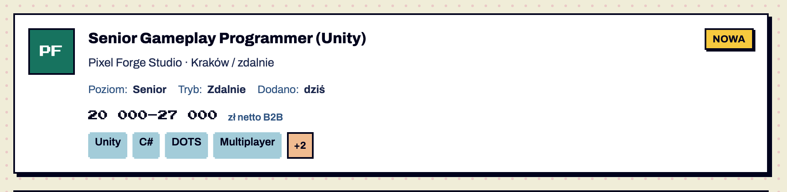
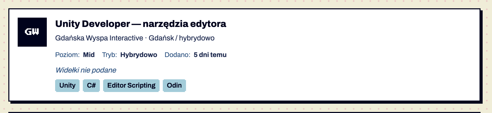
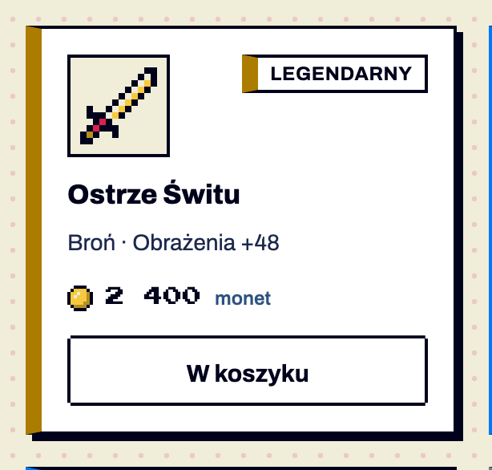
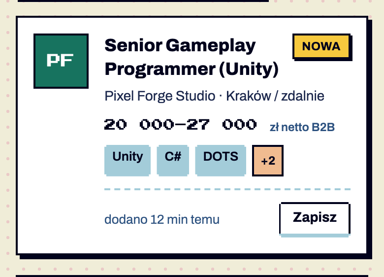

Smocza Jama Studio · Wrocław
22 000–28 000 zł netto B2B
UnityC#+2
dodano 2 godz. temu
Komponenty / Karta
stabilny Karta · od 1.0
testowy Wiersz meta w karcie · od 1.10 — brakuje: użycie na 2 ekranach, test z czytnikiem
testowy Pionowa karta produktu · od 1.11 — brakuje: użycie na 2 ekranach, test z czytnikiem
Pozycja wyników, gdy potrzeba więcej niż jednej linii: oferta (tytuł, firma, kwota, tagi) albo przedmiot sklepu (ikona, rzadkość, cena, akcja). Lista kart obsługuje sortowanie, filtry i „Zapisz” (K20). Potwierdzone w dokumentacji S01 §6.6.




| Część / rola | Wymagana / opcjonalna | Składnik / źródło | Co można zmienić / status |
|---|---|---|---|
| kontener (ramka 2 px, cień 4 px) | wymagany | .card | Potwierdzone w dokumentacji |
| awatar xl / ikona przedmiotu | wymagany | K05 / SVG pixel-art | Potwierdzone w dokumentacji |
| tytuł (link) | wymagany | h3 | Potwierdzone w dokumentacji |
| badge „Nowa” | opcjonalny | K02 | Potwierdzone w dokumentacji |
| podtytuł (firma · miasto / tryb) | wymagany dla oferty | .card-sub | Potwierdzone w dokumentacji |
| kwota / „Widełki nie podane” | wymagana | .amount / .is-empty | Potwierdzone w dokumentacji |
| chipy | opcjonalne | K03 | Potwierdzone w dokumentacji |
| meta (poziom, tryb, dodano) | opcjonalna | .card-meta, ikony 12 px opcjonalne | testowy od 1.10 Potwierdzone w dokumentacji |
| stopka (czas + Zapisz) | opcjonalna | S10 | poza systemem Szacunek z obrazu |
| Oś | Wartość | Kiedy użyć | Co się zmienia | Ograniczenia / status / źródło |
|---|---|---|---|---|
| treść | oferta | listing ofert | awatar, firma, kwota zł | Potwierdzone w dokumentacji S10, S11 |
| treść | przedmiot sklepu | sklep | ikona pixel-art, rzadkość, cena w monetach, przycisk | Szacunek z obrazu S13 — anatomia własna ekranu |
| stan danych | bez widełek | brak kwoty | kursywa „Widełki nie podane” | Potwierdzone w dokumentacji |
| ukryta | [hidden] | odfiltrowana | display none | Potwierdzone w dokumentacji S01 §6.12 |
Pozycje bez wartości idą na koniec sortowania (S03). Kwota w pikselowym foncie jest szeroka — przy 390 px łamie się, ale nie wystaje (zrzuty) Potwierdzone w dokumentacji.
| Zalecane — przykład | Niewskazane — przykład | Powód / status / źródło |
|---|---|---|
| „Widełki nie podane” kursywą | puste miejsce albo „0 zł” | brak danych ≠ zero Potwierdzone w dokumentacji |
| tytuł karty jako link w kolorze tekstu | niebieski podkreślony tytuł | pułapka z testów — tytuły dziedziczyły kolor linku Potwierdzone w dokumentacji |
| max 4 chipy | chmura tagów | Potwierdzone w dokumentacji |
| Zastosowanie | Token | Tryb / wariant | Wartość | Źródło | Status |
|---|---|---|---|---|---|
| cień | --shadow-md | 4px 4px 0 | S01 | Potwierdzone w dokumentacji | |
| kwota | --font-pixel | 12 px | S01 | Potwierdzone w dokumentacji | |
| jednostka | --ink-3 | #2D5280 | S01 | Potwierdzone w dokumentacji |
| Elementy / krawędzie | Wariant | Wartość / relacja | Token | Reguła / źródło / dokładność |
|---|---|---|---|---|
| padding | — | 16 px | — | Potwierdzone w dokumentacji |
| awatar ↔ treść | — | 16 px | — | Potwierdzone w dokumentacji |
| karty w liście | — | 20 px | — | Potwierdzone w dokumentacji |
| siatka | S10 | 2 kolumny → 1 < 900 px | — | decyzja ekranu Szacunek z obrazu |
| Rola tekstu | Styl | Font / weight | Rozmiar | Interlinia | Tracking | Kolor / zachowanie / status |
|---|---|---|---|---|---|---|
| tytuł | card-title | Archivo 800 | 18 | 24 | — | link --ink, podkreślenie na hover Potwierdzone w dokumentacji |
| podtytuł | small | Archivo 400 | 14 | — | — | --ink-2 Potwierdzone w dokumentacji |
| kwota | pixel-sm | Press Start 2P | 12 | 1.6 | — | Potwierdzone w dokumentacji |
| brak kwoty | — | Archivo italic | 14 | — | — | --ink-3 Potwierdzone w dokumentacji |
Ta sama sekcja co w examples/komponenty.html — działa na systemie 1.11.0. Przełącz motyw w nagłówku, żeby zobaczyć tryb ciemny.
Kwota w wierszu: pełna na desktopie, skrót „18–24 tys.” poniżej 600 px (zwęź okno). Sortowanie = grupa przycisków aria-pressed.
„Piksele, które klikają się same”
Smocza Jama Studio · Wrocław
22 000–28 000 zł netto B2B
<section class="ex" id="listy" aria-labelledby="h-list">
<h2 id="h-list">Panel listy i karty z sortowaniem</h2>
<p>Kwota w wierszu: pełna na desktopie, skrót „18–24 tys.” poniżej 600 px (zwęź okno). Sortowanie = grupa przycisków <code>aria-pressed</code>.</p>
<div class="grid2">
<section class="panel" aria-labelledby="p-front">
<header class="panel-head"><h2 id="p-front">Frontend</h2><span class="count">128</span></header>
<p class="panel-motto">„Piksele, które klikają się same”</p>
<ol class="list">
<li><a href="#listy"><span class="list-n">1.</span><span class="avatar" style="--av:var(--avatar-1)" aria-hidden="true">PF</span><span class="list-name" title="Senior Frontend Developer (React)">Senior Frontend Developer (React)</span><span class="list-value"><span class="amt-full">18 000–24 000 zł</span><span class="amt-short" aria-hidden="true">18–24 tys.</span></span></a></li>
<li><a href="#listy"><span class="list-n">2.</span><span class="avatar" style="--av:var(--avatar-3)" aria-hidden="true">KK</span><span class="list-name" title="Frontend Engineer — Design System">Frontend Engineer — Design System</span><span class="list-value"><span class="amt-full">16 000–22 500 zł</span><span class="amt-short" aria-hidden="true">16–22,5 tys.</span></span></a></li>
<li><a href="#listy"><span class="list-n">3.</span><span class="avatar" style="--av:var(--avatar-2)" aria-hidden="true">8A</span><span class="list-name">Junior Vue.js Developer</span><span class="badge badge-sm badge-new">Nowa</span></a></li>
<li><a href="#listy"><span class="list-n">4.</span><span class="avatar" style="--av:var(--avatar-5)" aria-hidden="true">SJ</span><span class="list-name">Angular Developer w fintechu</span><span class="list-value" aria-label="brak widełek">—</span></a></li>
</ol>
<a class="panel-more" href="#listy">Zobacz wszystkie</a>
</section>
<div class="stack">
<div class="section-title"><h2><span data-count-for="demo" data-count-forms="oferta|oferty|ofert">3 oferty</span></h2>
<button class="btn btn-secondary btn-compact filters-toggle" type="button" data-dialog-open="filtry-szuflada"><span class="icon i-filter" aria-hidden="true"></span>Filtry</button>
<div class="tabs" role="group" aria-label="Sortuj oferty" data-sort-for="demo">
<button type="button" aria-pressed="true" data-sort-key="date" data-sort-dir="desc">Najnowsze</button>
<button type="button" aria-pressed="false" data-sort-key="salary" data-sort-dir="desc">Najwyższe widełki</button>
</div></div>
<div class="stack" data-list="demo" style="display:grid;gap:16px">
<article class="card" data-item data-sort-date="20261110" data-sort-salary="28000" data-f-tryb="hybrydowo" data-n-salary="22000 28000">
<span class="avatar avatar-xl" style="--av:var(--avatar-2)" aria-hidden="true">SJ</span>
<div class="card-body">
<div class="card-head"><h3 class="card-title"><a href="#listy">Senior Unity Developer</a></h3><span class="badge badge-new">Nowa</span></div>
<p class="card-sub">Smocza Jama Studio · Wrocław</p>
<ul class="card-meta"><li><span class="icon icon-sm i-user" aria-hidden="true"></span>Poziom: <b>Senior</b></li><li><span class="icon icon-sm i-home" aria-hidden="true"></span>Tryb: <b>Hybrydowo</b></li><li><span class="icon icon-sm i-hourglass" aria-hidden="true"></span>Dodano: <b>2 godz. temu</b></li></ul>
<p class="amount">22 000–28 000 <small>zł netto B2B</small></p>
<div class="chips"><span class="chip">Unity</span><span class="chip">C#</span><span class="chip-more">+2</span></div>
<div class="card-foot"><span>dodano 2 godz. temu</span><button class="btn btn-secondary btn-compact" type="button" aria-pressed="false" data-label-on="Zapisano" data-label-off="Zapisz">Zapisz</button></div>
</div>
</article>
<article class="card" data-item data-sort-date="20261109" data-f-tryb="zdalnie">
<span class="avatar avatar-xl" style="--av:var(--avatar-3)" aria-hidden="true">KK</span>
<div class="card-body">
<div class="card-head"><h3 class="card-title"><a href="#listy">Game Designer — ekonomia gry</a></h3></div>
<p class="card-sub">Kosmiczny Kret · zdalnie</p>
<p class="amount is-empty">Widełki nie podane</p>
<div class="card-foot"><span>dodano wczoraj</span><button class="btn btn-secondary btn-compact" type="button" aria-pressed="false" data-label-on="Zapisano" data-label-off="Zapisz">Zapisz</button></div>
</div>
</article>
<article class="card" data-item data-sort-date="20261105" data-sort-salary="32000" data-f-tryb="stacjonarnie" data-n-salary="26000 32000">
<span class="avatar avatar-xl" style="--av:var(--avatar-1)" aria-hidden="true">8A</span>
<div class="card-body">
<div class="card-head"><h3 class="card-title"><a href="#listy">Lead Backend Developer (Go)</a></h3></div>
<p class="card-sub">8bit Atelier · Gdańsk</p>
<p class="amount">26 000–32 000 <small>zł netto B2B</small></p>
<div class="card-foot"><span>dodano 5 dni temu</span><button class="btn btn-secondary btn-compact" type="button" aria-pressed="false" data-label-on="Zapisano" data-label-off="Zapisz">Zapisz</button></div>
</div>
</article>
</div>
</div>
</div>
</section>| Właściwość / atrybut | Typ | Wartości pokazane / opisane | Domyślna | Efekt i zastosowanie | Zależności / status / źródło |
|---|---|---|---|---|---|
| tytuł | tekst | — | — | wiele linii dozwolone | Potwierdzone w dokumentacji |
| kwota | zakres liczb | 18 000–24 000 + jednostka | — | brak → is-empty | Potwierdzone w dokumentacji |
| nowa | boolean | — | nie | badge-new | Potwierdzone w dokumentacji |
| data-sort-*, data-f-* | atrybuty | date, salary, tryb, poziom, tech | — | sortowanie/filtry | Potwierdzone w dokumentacji S03 |
Ramka 2 px, cień 4 px, padding 16 px. Układ: monogram/logo 56 px w ramce · treść (tytuł card-title + badge w prawym górnym rogu, podtytuł small --ink-2, kwota pixel-sm + jednostka Archivo 12/600, chipy).
<article class="card">
<span class="avatar avatar-xl" style="--av:var(--avatar-1)">PF</span>
<div class="card-body">
<div class="card-head"><h3>Senior Frontend Developer</h3><span class="badge badge-new">Nowa</span></div>
<p class="card-sub">Pixel Forge · Kraków / zdalnie</p>
<p class="amount">18 000–24 000 <small>zł netto B2B</small></p>
<div class="chips"><span class="chip">React</span><span class="chip">TypeScript</span></div>
</div>
</article>Brak kwoty → <p class="amount is-empty">Widełki nie podane</p> (kursywa Archivo).
Wiersz meta (v1.10): opcjonalnie pod podtytułem karty 3–4 kluczowe atrybuty — <ul class="card-meta"><li><span class="icon icon-sm i-user" aria-hidden="true"></span>Poziom: <b>Senior</b></li><li>Tryb: <b>Zdalnie</b></li><li>Dodano: <b>dziś</b></li></ul> (13 px --ink-3, wartość 700 --ink-2, ikony 12 px nieobowiązkowe; na telefonie zawija się).
Pionowa karta produktu (v1.11): do siatek sklepu, katalogu produktów i galerii — ilustracja nad nazwą. Modyfikator .card-vertical (kolumna, odstęp 10 px) → .card-art (pole 88 px, tło --paper, ramka 2 px, sprite -xl lub obrazek ≤ 64 px) → h3 → .tier-tag (opcjonalnie) → .card-meta z atrybutami → .card-foot przyklejona do dołu (margin-top: auto), w niej cena .card-price (sprite waluty + liczba w pixel-foncie + jednostka Archivo) i przycisk .btn-compact. Karty w siatce repeat(auto-fill, minmax(210px, 1fr)) mają równą wysokość, więc ceny stoją w jednej linii. Pole ilustracji nigdy w kolorze akcentu — to nie jest „głośny element”.
<article class="card card-vertical">
<div class="card-art"><span class="sprite sprite-xl s-sword" aria-hidden="true"></span></div>
<h3>Ostrze Zmierzchu</h3>
<span class="tier-tag tier-legendary">Legendarny</span>
<ul class="card-meta"><li>Broń</li><li>Obrażenia <b>+48</b></li></ul>
<div class="card-foot">
<span class="card-price"><span class="sprite sprite-sm s-coin" aria-hidden="true"></span>1 800<small>monet</small></span>
<button class="btn btn-secondary btn-compact" type="button" aria-pressed="false">Do koszyka</button>
</div>
</article>Cel: WCAG 2.2 AA. Statyczne materiały i testy automatyczne w Chrome nie dowodzą zgodności — miejsca oznaczone „Do testu we wdrożeniu” wymagają testu z czytnikiem ekranu (design.md §0.6).
| Obszar | Ustalenie lub wymaganie | Dowód / status | Kryterium / wzorzec | Jak sprawdzić |
|---|---|---|---|---|
| nazwa linku | tytuł karty jest linkiem do oferty | Potwierdzone w dokumentacji | WCAG 2.4.4 Link Purpose (A) | czytnik Do testu we wdrożeniu |
| kwota | tekst, nie obraz | Potwierdzone w dokumentacji | WCAG 1.4.5 (AA) | zaznaczenie tekstu |
| reflow | brak poziomego przewijania przy 390 px | zmierzone Potwierdzone w dokumentacji | WCAG 1.4.10 (AA) | render_check |
S01 §6.6; S03; S10, S11, S13.